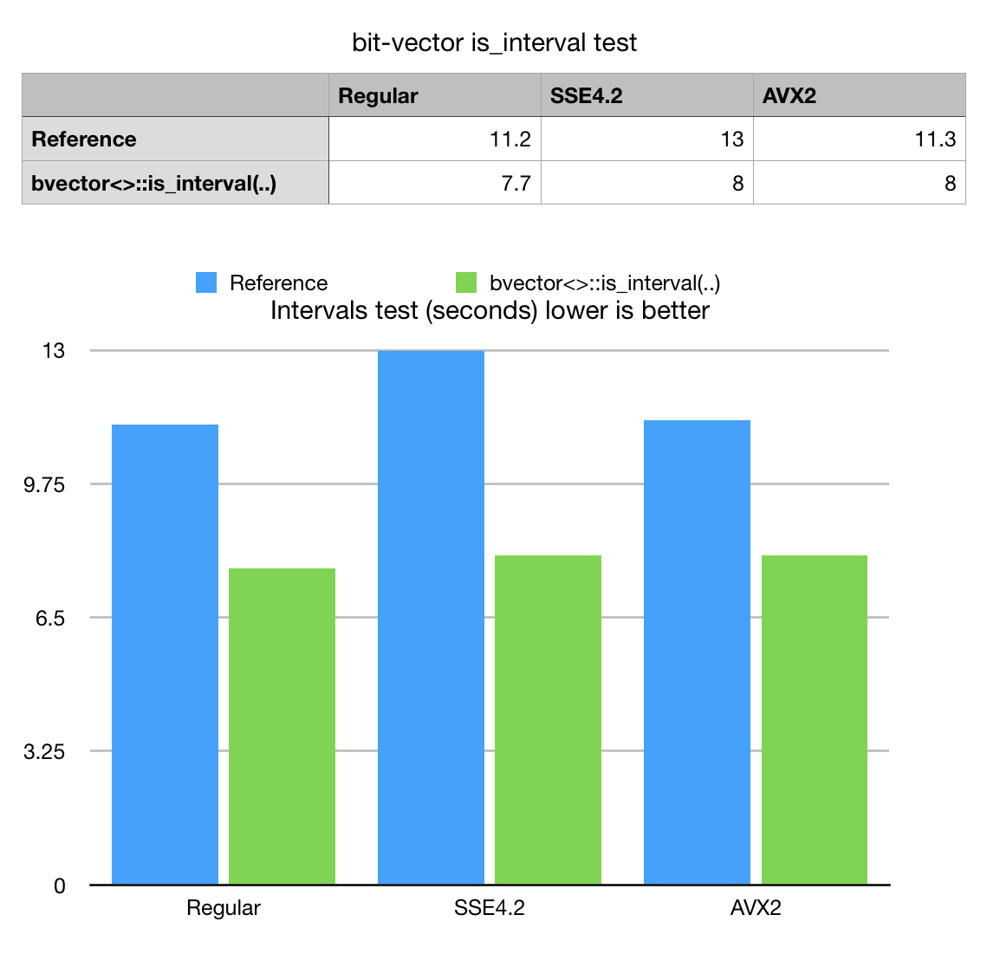

Version 6.1.0
Feb 8, 2020Release Notes
- Performance improvements for WebAssembly Emscripten builds with exceptions enabled. Emscripten implementation of C++ exceptions generates code which makes a jump to the browser to properly handle resources. It turns out that even in the absense of exceptions function calls can be significantly slowed down if there is no explicit "noexcept" declaration. New version now declares many low level functions as "noexcept" which improved BitMagic WebAsm performance up to 5x times.
-
New functions for more effcient operations with ranges and intervals.
Name Description bvector<>::is_all_one_range(..) Check if all bits in the specified range are all 1s bvector<>::any_range(..) Check if any bits in the specified range are 1s bvector<>::is_interval(..) Check if all bits in the specified range are 1s AND flanked by 0s "011110" - sample22.cpp New example to help with ranges and intervals.
Download v 6.1.0 (Sourceforge) GitHub
Technical notes on operations with ranges and intervals
Motivation
Compressed bit-vectors are known to offer efficient logical operations with sets. Another use case is when sequence of bits is treated as a pattern "01100011110", where island of 'ones' encodes a start-stop (left-right) range.
Ranges and intervals are applicable for many use cases from encoding of B&W images to representing events on genome (exon-intron gene structures, insertions-deletions, nucleotide matches and mismatches).
RLE compressed bit-vectors often use some form of start-stop (or start-length) internal representation, thus could potentially support ranges and intervals. Adaptive nature of compressed bit-vectors would ensure, that blocks of high enthropy (short and random ranges would remain as bit-blocks) and medium to long ranges would be encoded in GAP compressed (RLE) form. All representations would support operations on ranges (for example: intersects).
BitMagic supports serialization compression with Elias-Gamma or Binary Interpolative Coding. Combined with RLE/GAP coding it works well to efficiently store binary data models with expressed range structure.
The missing piece here are functions (and iterators) to interpret a bit-vector as a collection of non-verlapping intervals.
New methods: provide convinient APIs for ranges and work faster than if we had to simulate it with regular bit-vector methods.
Performance evaluation
As an benchmark example let us take function to check if closed range is "an interval" (all 1s flanked with 0s) on both ends ('0111110'). Our reference implementation would rely on bit-tests to check the flanks and bit-counting to make sure all bits in the range are set.
template
bool test_interval(const BV& bv,
typename BV::size_type left, typename BV::size_type right) noexcept
{
bool is_left(0), is_right(0);
if (left) // check left-1 bit (if exists)
is_left = bv.test(left - 1);
if ((is_left == false) && (right < bm::id_max - 1))
is_right = bv.test(right + 1); // check [...right] range condition
if (is_left == false && is_right == false)
{
typename BV::size_type cnt = bv.count_range(left, right);
if (cnt == (1 + right - left))
return true;
}
return false;
}
It may work Ok if bit-vector is not compressed and particular block(s) in the range does not require more expensive binary search lookups and system is configured to support population counting acceleration.

BitMagic v.6.1.0 offers specialized implementation of bvector<>::is_interval(..).
Synthetic benchmark data with a mix of different blocks used to illustrate performance efficiency.
New method outperforms reference method in all cases. For this benchmark
SIMD vectorization does not make a difference (code is heavy on conditions).
Benchmark source code
Available on GitHub BM Perf
TODOs
Need a special iterator-type class to interpret bvector<> as a sequence of intervals.